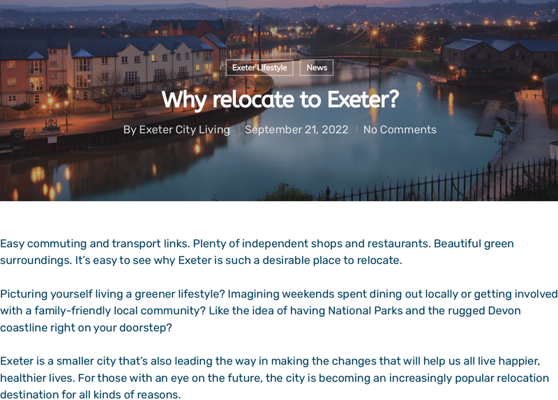
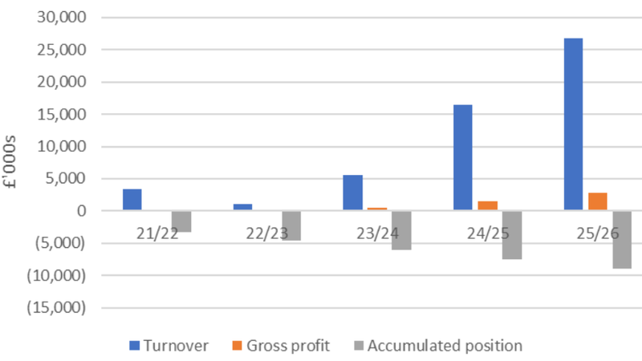
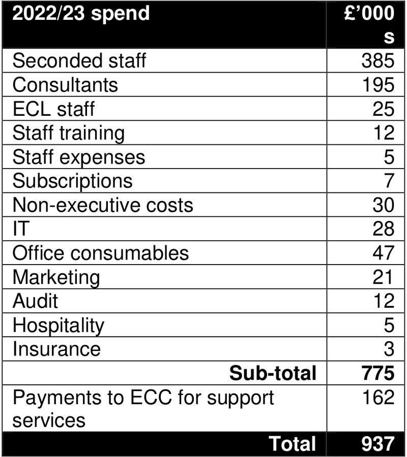

Exeter City Living, the city council’s subsidiary property development company, is to be all-but wound up after making cumulative losses of more than £4.5 million. It still owes the council more than £10 million against loans intended to deliver hundreds of new homes on sites including Clifton Hill sports centre.
The council intends to acquire the company’s assets by releasing the company from its loan obligations, leaving it to settle the company’s loan liabilities when its creditors are repaid. But it expects the resulting resale value of the surrendered Clifton Hill development site not to cover the company’s debts, with the remaining losses to be written off.
In this special report we examine the company’s financial and development delivery history, the council’s decision-making about the company and the position in which the company’s failure has left the council.
We look at council decisions to loan the company up to £44 million to finance construction and also spend £46.3 million buying the resulting housing, underwriting the company at both ends after failing to change course when new local government borrowing rules rendered the company redundant just ten weeks after it was set up.
We consider the council’s claims about the causes of the company’s failure, explore the findings of an independent review into what happened, and ask what the consequences might be for the council’s Liveable Exeter development scheme, the new Exeter Local Plan and the council’s ability to protect the city’s greenbelt.
We also ask who is responsible and who should be held responsible for the serial performance, governance and viability failings around Exeter City Living that have jeopardised the council’s finances just when it has to cut another £5 million from its budget.
 Homes for local people? Exeter City Living promotional material. Source: Exeter City Living.
Seven years ago this month, Exeter City Council agreed to spend £350,000 on a “detailed feasibility study into the benefits of setting up a housing development company”. Eighteen months later it allocated another £260,000 to cover the cost of setting up the company and creating its first year business plan.
A steering group of senior officers and councillors was created to oversee the process.
Exeter City Living Ltd was incorporated as a wholly-owned subsidiary of the council in June 2018. In July the council agreed to loan it £4.35 million to implement its first year business plan then another £5 million loan followed seven months later to finance the company’s second year.
Less than twelve months afterwards, in January 2020, the council approved a third loan to the company, this time for nearly £16 million to enable it to buy, demolish and redevelop Clifton Hill sports centre, which it also agreed to sell to the company for £2.14 million, half its market value.
It then agreed to spend another £300,000 on expanding the Exeter City Living company group through three new subsidiary companies: one to manage market rental property, a second to provide consultancy services and a third to deliver domestic retrofits.
But the company’s third year business plan was nine months late, breaching the terms of its management agreement with the council. And the requirement that it produce a fourth year business plan was waived, in private, by the council’s then-chief executive Karime Hassan, who was appointed as the council’s company shareholder representative shortly afterwards.
Council chief finance officer Dave Hodgson, who was appointed to the company board at the same time, and council leader Phil Bialyk also took part in the decision.
Exeter City Living 2020-21 business plan project development delivery schedule. Source: Exeter City Living via freedom of information request, redacted.
Despite this, the council then agreed a budget of £3.5 million for Exeter City Living to relocate a council depot at Belle Isle park and, without saying anything about the connection between the two decisions, agreed to sell the resulting development site to Exeter City Living for £2.2 million.
By last April, the end of the company’s fourth trading year, the council had allocated nearly £1 million to company start up and business planning costs, approved loans of £25 million to finance its running costs and gifted it more than £2 million in land purchase discounts.
The company had also been granted more than £7 million in central government financial support, yet it had only completed 22 housing units and had lost £3.3 million after posting income of just £36,000 the preceding financial year.
A subsequent auditor’s report identified company governance weaknesses including its missing 2021-22 business plan, the lack of company performance reports and conflicts of interest created by council directors with statutory legal and financial responsibilities holding company board roles.
The report also criticised the council’s practice of taking all its decisions related to the company in private and withholding company business plans and reports from the public.
 Exeter City Living financial projections. Accumulated losses of £8,934 million are expected by 2025-26. Source: Local Partnerships report.
Karime Hassan nevertheless commended the company’s 2022-23 business plan (which was five months late) to councillors. He claimed the company was about to embark on “an ambitious phase of delivery” which would see it build as many as 675 new homes across thirteen sites in addition to the 155 flats and houses it had already committed to delivering.
He urged councillors to “take a longer term view of the benefits that the company will bring” despite its business plan appearing “to show a company in financial trouble” on the grounds that “to see a particularly small development company, which is still in its infancy, make significant losses in the short term” is “not unusual”.
He acknowledged that the proposed expansion would require a “substantial funding commitment” and asked councillors to approve loans for another £22.8 million, prospectively increasing the company’s loan balance to £44 million by 2024, which they did.
The company itself claimed to be “coming of age”, on which basis it intended to double its staff of six to twelve, while its board members (which also by then included Baan Al-Khafaji, the council’s monitoring officer) were “comfortable that the risks, where Exeter City Living are in control, can be managed satisfactorily”.
 Exeter City Living 2022-23 administrative expenditure. Source: Local Partnerships report.
In January this year it failed to find a contractor willing to take on the Clifton Hill site, having tried twice to tender the project, and Karime Hassan had to ask councillors to allow the company to submit its 2023-24 company business plan six months late. They agreed.
By April, Exeter City Living had accumulated losses of £4.5 million against expenditure of £9.3 million. Its administration costs alone had reached £937,000 a year.
An independent review of the company’s performance, governance and viability was announced in February, then postponed, before being announced again in June. It was to be delivered in April, then June, then September, before finally appearing on the agenda at Tuesday’s Executive committee meeting.
The review, which Baan Al-Khafaji described as “prudent and timely”, was performed by Local Partnerships, an independent, arms-length body jointly owned by the Treasury, the Local Government Association and the Welsh Government. It cost £33,000.
It is accompanied by a summary of Exeter City Living’s “activities and achievements” and a report by the council’s new chief executive, Bindu Arjoon.
Bindu Arjoon’s report confirms that Exeter City Living owes the council £10,096,000 after making loan repayments of just £754,000. It says the company has “around” £1.8 million in cash left, but owes money to creditors.
Work in progress and the Clifton Hill site are together valued at just over £4 million. The company is also currently contributing just over £1 million to the council’s annual income, more than half of which is loan interest.
Her report also confirms that the council is at risk of breaching the Prudential Code, which governs the way local authorities borrow and invest, because the company is relying on council borrowing to finance its running costs and repay its loans.
It hasn’t quite crossed the line because the company’s total turnover since it was incorporated is currently greater than its total running costs and loan repayments, but it is on the brink of doing so unless the council gives it more cash.
The independent review is less circumspect. It says the company is putting the council at both “budget and reputational risk” and that it “represents an expensive, high-risk delivery mechanism which Exeter City Council cannot afford to continue funding”.
It adds: “Currently there is no plausible strategy for the repayment of the loans provided by Exeter City Council to Exeter City Living. Exeter City Living is currently making ever-accumulating losses, while making repayments out of the capital sums loaned to Exeter City Living. Clearly this cannot continue.”
The independent review covers a lot of ground, but doesn’t get to the bottom of just how long the company has been in this position. Nor does it appear to grasp the significance of the council’s decision to borrow yet more money to underwrite the company’s construction output.
In October 2019, Bindu Arjoon, then a senior council director, proposed an £18 million budget to purchase all the flats and houses the company was expected to deliver on development sites at Thornpark Rise, Bovemoors Lane, Hamlin Gardens and Vaughan Road.
The council has since increased this budget three times, in March last year then again in February this year and in June too. Its Exeter City Living site purchasing budget now stands at £46.3 million.
So the council is borrowing money to loan to the company to build on council land (and buy some of it too) while also borrowing to buy the resulting housing (and sometimes the land) back from the company in turn, financing the company at both ends.
The council must avoid the risk of company solvency at all costs – the unfinished sites equate to £41.5 million of its purchasing budget, without including Clifton Hill – but it cannot breach the Prudential Code by giving the company more cash to keep it afloat.
The independent review concludes that Exeter City Living should be wound up, but the council wants to stop short of this. It says this is because Karime Hassan and Phil Bialyk decided to set the company up as landlord of six rented flats it acquired at the Guildhall shopping centre when it bought back its leasehold last summer.
Were these flats to revert to direct council ownership their tenants could acquire the right to buy them, putting the council’s plans for the Guildhall shopping centre at risk (the centre sits at the heart of a major development site allocated in the new Exeter Local Plan).
So the council instead intends to acquire all of Exeter City Living’s assets, including the work in progress at Hamlin Gardens and Vaughan Road and the Clifton Hill site (but not the Guildhall flats) by releasing the company from its loan obligations. It then intends to repay all the company’s creditors, leaving the council with the company’s assets as well as its loan liabilities.
The council says it will write off the shortfall “in the likely event that the value of the assets to be acquired from Exeter City Living is not sufficient to repay the loan to the council”, but it will not know how large this write-off will be until it has confirmed the value of the Clifton Hill site.
It also says it does not expect that the debt will “require the sale of any assets that were not already earmarked for redevelopment”.
The remaining Exeter City Living group companies will all be dissolved.
The council would like us to focus, in reacting to this news, on what it calls the company’s achievements. The company has completed 22 houses and is constructing 21 flats at Hamlin Gardens and 35 more at Vaughan Road which it says will be finished by the end next year.
The council would also like us to accept Brexit, the COVID-19 pandemic, the war in Ukraine and interest rate rises as major causes of the company’s failure.
The Brexit referendum took place in June 2016, three months before the council commissioned its housing development company feasibility study. Brexit isn’t mentioned once in the resulting 250 page company business case, first year business plan, management agreement and company articles. Councillors approved the company’s creation in July 2018, two years later.
The UK then left the European Union in January 2020, at the same time as councillors approved its £16 million loan to the company on the basis of a company opportunity paper that confidently said it had mitigated all the risks associated with departure. The council was happy to say a 20% profit was forecast for the development.
The COVID-19 pandemic officially became a global health emergency in March 2020. Councillors nevertheless approved the company’s third year business plan in July, four months later, even though the plan laid out an extremely optimistic “upscaling of Exeter City Living’s activities”.
It said the company would soon be delivering on thirteen development sites, nine of which it said would be under construction by spring 2022. So confident was the company that it said it might need more money during the financial year if it delivered ahead of schedule.
The plan barely acknowledges the pandemic, and none of the councillors who attended the meeting, which was held remotely because of the infection risk, said anything about its potential impact on the company. According to the minutes they didn’t discuss the plan at all.
The Russian invasion of Ukraine then began in February last year. The following month councillors approved additional loans of £22.8 million to the company on the basis it would still rapidly grow even though it was immediately clear that the war would have far-reaching consequences.
And the Bank of England base interest rate passed 1% on its way to its recent peak in May last year. Six months later councillors saw no reason to make any amendments to the company’s 2022-23 business plan when presented with a mid-year update.
They then added £27 million to the council’s Exeter City Living development sites purchasing budget in February and June this year.
Council officers would also like us to believe that councillors undermined the company’s prospects when the public outcry over plans to sell Northbrook golf course and the whole Clifton Hill site (including all the greenspace behind the sports centre) for development prompted them to change their minds.
Bindu Arjoon says both Northbrook and Clifton Hill were “originally identified” by the company as “key sites” when Exeter City Living was established. She also says that the decision not to sell them for development presented an immediate challenge to the company by removing potentially profitable greenfield development opportunities from its pipeline.
Apart from the public reaction to the proposed sale of both green spaces being entirely predictable, there is no mention of either in the company business case or first year business plan, which nevertheless lays out the five schemes the company did intend to pursue.
In February 2019, nine months after the company was incorporated, then-council leader Pete Edwards confirmed that the Clifton Hill site “had not been approved as part of the current business plan and the cost was likely to be in excess of the devolved financial amounts that they [the company] were able to spend”.
He added: “If Exeter City Living wish to bid for the site, they would need to submit a suitable, robust business case to council for consideration.”
In December that year the company’s opportunity paper also confirmed that it had considered development there “following the closure of Clifton Hill leisure centre and subsequent council resolutions regarding the sale of the site”.
If Exeter City Living needed a £15.64 million loan to buy and develop the rump of the Clifton Hill site, how much might it have needed to borrow from the council to develop the whole site? It would have paid £7 million more for the land, which was valued at £9 million, on which around 200 dwellings were expected, five times as many as the company said it would build on the rump.
At a build cost of £320,000 per dwelling, as per its plans for the rump, the purchase and development cost of the whole site would have been around £70 million.
Northbrook golf course, at a little over 12 acres, is larger than the whole Clifton Hill site. To finance both developments the council would have had to quadruple its total 2018-19 government borrowing, from £59 million to more than £200 million, and lend all the capital to Exeter City Living, a start-up developer without a track record that needed £150 million to get off the ground.
If any of the causes the council claims for the company’s failure presented it with existential risks, why didn’t Karime Hassan, the council’s shareholder representative, or Phil Bialyk, the council leader, or any of the company board members bring them up as they arose?
Instead they repeatedly proposed company expansion, and ever-larger loans, despite the company’s consistent failure to deliver on its business plans, or even to deliver business plans at all.
And what about other councillors? The company’s affairs have been put in front of them at many meetings in the seven years since it was mooted. Despite numerous opportunities, and prompts, to pause for thought they have repeatedly agreed proposals to spend, in total, more than £100 million supporting the company.
So perhaps we should not be surprised that when, just ten weeks after the company’s incorporation was approved, the cap that prevented local authorities borrowing to build new council housing stock was lifted, neither officers nor councillors thought to change course.
The independent review says: “It is very important to recognise that within a few months of the establishment of Exeter City Living, a key part of its rationale – development of affordable homes outside of the HRA ring-fence – was no longer a reason for its existence, once the HRA borrowing cap was lifted.”
It adds that this disappearance was not “replaced with a compelling justification” for the company’s retention.
The borrowing cap removal had looked possible, if not likely, for some time before it happened. Several local authorities had been lobbying the government over the cap since March the previous year, with the government first saying that “innovative” councils could bid to increase their caps, then providing £1 billion extra borrowing capacity for “areas of high affordability pressure” before removing it altogether.
The independent reviewers say that some of those they interviewed to gather evidence for their report “were of the view that a pause and review would have been helpful at that time”. Certainly the cost of dissolving the company so soon after its incorporation would have been much lower than the loss with which the council is now faced.
Four months after the announcement that the cap was being removed, Bindu Arjoon told an Executive committee meeting that “there was no further information required from the government on the implications of the lifting of the HRA borrowing cap”.
She then returned to the committee in October 2019, a year after the cap had been lifted, to propose an £18 million budget to purchase (for HRA stock) all the housing Exeter City Living was expected to deliver on its sites at Thornpark Rise, Bovemoors Lane, Hamlin Gardens and Vaughan Road.
Her report says the lifting of the HRA borrowing cap presented “a great opportunity” to the council. It also says that “a decision was made to take a step back, in order to look at the opportunities in a holistic and strategic way” after the cap had been lifted, but none of the opportunities that it identifies included reviewing the rationale for Exeter City Living’s existence.
The independent review says: “Since the removal of the HRA borrowing cap in October 2018, shortly after Exeter City Living’s establishment, any of these schemes could have been delivered by the council directly, as part of an HRA development programme”.
It also says that the company is “not adding value to the delivery of HRA schemes over and above that which could have been achieved through deploying the same resources as part of a directly delivered HRA development programme”.
Worse, it found that the council had incurred costs as a result of buying company-built housing that could have been avoided, and that better outcomes could have been achieved had there been “a robust process in place to ensure that the HRA is securing value for money for its investment.”
What it did not say, perhaps because it did not grasp its significance, was that from the moment the council decided to finance the company’s sales as well as its production, every penny that the council notionally earned from company interest payments and other contributions simply increased the prices it paid when it bought the company’s houses and flats.
The independent review does say that the council’s approach to capitalising the company has been “unorthodox” and that it has been “contravening basic finance principles by borrowing long-term debt to finance day to day operating activity”.
It also says the council is “effectively converting an element of debt borrowed by the council into income for the council” (in the form of charges for financial, legal and planning services), a practice it describes as “questionable”.
It also criticises the company’s financial management, not least its unrealistic revenue projections, which suggest a fundamental misunderstanding of the company’s finances.
This is borne out in the company’s insistence that the council benefits from its loan interest payments and developer contributions, when these costs are included in the sale prices the council pays, and from its land purchases, when it buys its sites from the council at less than market value.
The independent review also highlights the confusion surrounding the company’s objectives, pointing out that they “have changed on several occasions, without the council taking stock”.
It says “critical shifts in the focus of Exeter City Living’s work seem to have taken place without proper consideration by members (over and above approval of the business plan), and without consideration of the tensions between them”, which it says remain “unresolved”.
The reviewers also say they heard “concerns about the lack of elected member understanding and engagement with the work of Exeter City Living, particularly in relation to those functions undertaken by the council [chief executive] as shareholder representative.”
Notwithstanding these, and other, issues, the independent review places site viability at the heart of the company’s development delivery failures.
It says the council and company are insufficiently co-ordinated around a host of challenges ranging from vacant possession, tenant relocation or third party interests that may require compulsory purchase orders, to archaeological and structural issues, planning processes and community opposition to development on specific sites.
It says the company makes assumptions about the status of sites while not keeping the council properly informed about its actions, including its bids for government Brownfield Land Release Fund grants, without which most of the sites it intends to develop are not viable.
Eight of the company’s development sites have attracted a total of £7.5 million in brownfield grants, ranging from £290,000 to £2.4 million, but only two have so far satisfied the funding condition that either work has to start or the land must be sold to draw down the money.
As a result less than £1 million of this money has actually been spent, with funding condition deadlines at the end of March, less than six months from now, on most of the sites. Worse, the council has already spent £55,000 from funding awards for which it has not yet qualified.
It is now scrambling to retain the grants by preparing “delivery plans and business cases” for as many of the sites as it can while trying to negotiate deadline extensions.
Even if it succeeds, its failure to follow through thus far after being awarded 10% of the national brownfield funding budget risks reputational damage in Whitehall to add to the damage done by its near-breach of the Prudential Code and the failure of the company itself.
As the independent reviewers say, “generating profit in house building is a complex challenge which relies on rigorous cost control (at the level of individual components and packages of works) and a mature sub-contractor supply chain.
“Well-established house builders protect their profit margin by micro-managing [various important] aspects of the development process.
“We have found elsewhere that other councils have underestimated the challenges of generating cross-subsidy profit and that it is not always possible for councils to exert the same levels of efficiency using the building contractor tender route.”
They add that “the barriers for delivery of the remaining pipeline, such as it is, appear at best very high, and quite possibly insurmountable”, and that “there remain multiple high probability and high impact risks, which will be difficult for either Exeter City Council or Exeter City Living to manage”.
All these viability challenges are as significant now as they were when Exeter City Living was incorporated, notwithstanding company mismanagement, before the HRA cap was lifted and before Brexit, the COVID-19 pandemic, the war in Ukraine or interest rate rises began.
What might they mean for the council’s Liveable Exeter brownfield site development “vision”?
Several of the sites the company failed to bring forward are allocated in the new Exeter Local Plan, which echoes its business plan language around “demonstrating viable delivery of ‘net zero’ housing on brownfield sites”.
Exeter City Living enjoys numerous advantages as a development company. It is owned by a council which is happy to finance both its production and sales with long-term publicly-financed loans at fixed interest rates while backing its bids to government for multi-million pound enabling grants. The council, as local planning authority, is willing to override its own affordable housing policy to help the company deliver. And the council, as landowner, is prepared to sell it sites for half their market value without the company having to go to tender.
What form would development have to take on these sites to make them viable if a company with all Exeter City Living’s advantages can’t deliver them? What about Clifton Hill? And will Exeter Development Fund fare any better at Southgate when Global City Futures shows its hand?
Perhaps the biggest risk presented by these brownfield sites is the impact their viability challenges have on greenfield sites on the edge of Exeter, such as Pendragon Road and Spruce Close, where developers can win much more easily at appeal if housing targets aren’t being met elsewhere in the city.
Who is responsible, and who should be held responsible, for these serial failings around Exeter City Living’s performance, governance and viability?
Karime Hassan was the council’s shareholder representative, and exercised extensive delegated powers by taking significant decisions about the company. He did so in consultation with Dave Hodgson and Phil Bialyk, who was in regular contact with company directors.
Karime Hassan’s employment at the council was terminated in December, although he stayed in post to the end of March. He has since joined Devon Housing Commission, billed as a “powerful voice to solve Devon’s housing crisis”.
Emma Osmundsen, also a council employee, was a company board member as well as company managing director. She also left the council in December, and is now CEO of Sixty Bricks, a council-owned property development company in Waltham Forest.
Baan Al-Khafaji and Dave Hodgson were both company board members from September 2020 to November last year alongside their roles as senior council directors. Both were in positions of responsibility at council and company.
Bindu Arjoon, now council chief executive, was responsible for proposing that the council should underwrite the company’s sales with an £18 million budget that was subsequently increased to £46.3 million, with council development director Ian Collinson proposing budget increases of £27 million in the past eight months alone.
Judging by their demeanour at Tuesday’s Executive meeting during what passed for discussion of the company’s failure, several of the senior officers present would like to believe that they do not share responsibility for what has happened, but can’t quite convince themselves that this is true.
The same meeting heard how the council is not only not on track to deliver the £3 million cuts it must make to its budget this year but will have to cut another £5 million from its budget over the next four years. And that’s before factoring in losses related to Exeter City Living.
Phil Bialyk with Emma Osmundsen and Karime Hassan at an Exeter City Living PR event
It is a common fallacy that the arrangements in national government, where MPs make policy and civil servants deliver it, is mirrored in local government.
Council officers are in charge at local level. The best most local electors can hope for is councillors who understand that their most important task is to scrutinise the actions and decisions of officers, often while holding down jobs and without the extensive resources afforded to their parliamentary counterparts.
This is especially so when the council denies public access to information and decision-making meetings, as it has done on numerous occasions in relation to Exeter City Living.
Nevertheless, councillors do have the power to assert control when they see officers leading the council in directions it should not take, should they need to exercise it.
Unfortunately, too many Exeter councillors for too many years have found it easier to assimilate inane claims about the city fabricated by senior council officers (and other influential actors) into their rose-tinted vision of who is really running Exeter than to diligently fulfil their roles as guardians of the interests of its residents and businesses.
Some city councillors were only recently elected, and so are less culpable than those on whose watch all this took place. Who among those who were in the room all along should take responsibility for the losses Exeter is suffering because of Exeter City Living?


{kind=link}